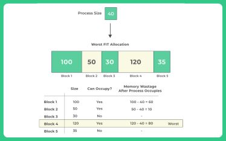
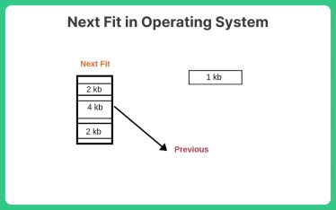
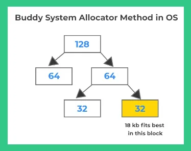

The First Fit algorithm allocates the first available block of memory that is large enough to hold the requested amount of memory. It scans the list of available memory blocks from the beginning and allocates the first block that meets the size requirement.
Example: This image depicts the First-Fit memory allocation algorithm. Processes require varying amounts of memory (P1: 20, P2: 60, P3: 70, P4: 40). Memory blocks of different sizes are available (Block 1: 100, Block 2: 50, etc.). First-Fit allocates processes to the first block it finds that has enough space. In this example, P1 fits in Block 1 with leftover space, while P4 utilizes Block 5 entirely. However, Block 2 and 3 remain unused even though their combined size could accommodate Process 3, demonstrating a potential drawback of First-Fit – it might not always find the most efficient allocation.
The Worst Fit algorithm allocates the largest available block of memory that is large enough to hold the requested amount of memory. It scans the list of available memory blocks and allocates the largest block that meets the size requirement.
Example: Worst-fit allocation assigns the largest available block to the process, even if there are smaller blocks that could fit. In this example, Block 4, with 120 blocks, is allocated to the process, resulting in 80 blocks of wasted memory. This can lead to memory fragmentation, where smaller blocks of memory become unusable because they are not big enough to hold any processes.
The Next Fit algorithm is similar to the First Fit algorithm, but it starts searching for an available block from the last allocated block instead of the beginning of the list. If no suitable block is found, it wraps around and continues the search from the beginning of the list.
Example: Unlike First-Fit, which starts searching from the beginning each time, Next-Fit keeps track of the last allocated block. It searches for the next free block starting from there, wrapping around to the beginning if needed. Here, P1 fits in Block 1. Next-Fit remembers this location and finds Block 5 for P4. Blocks 2 and 3 are skipped even though they could fit P3, demonstrating a potential drawback of Next-Fit - it may not find the most optimal fit depending on the allocation order.
The Best Fit algorithm allocates the smallest available block of memory that is large enough to hold the requested amount of memory. It scans the list of available memory blocks and allocates the smallest block that meets the size requirement.
Example: It shows five blocks of memory, each with a different size, and a process requiring 40 blocks. Best-fit allocation aims to find the smallest free block that's large enough to hold the process. In this example, Block 2, with 50 blocks, is allocated to the process, resulting in minimal wasted memory (10 blocks). This approach can help reduce external fragmentation, where small unusable memory pockets arise due to prior allocations.
The Buddy System is a memory allocation technique that divides the available memory into equal-sized partitions and manages them in a binary tree structure. Each node in the tree represents a block of memory, and the size of each block is a power of two.
When a process requests memory, the Buddy System finds the smallest block that is larger than or equal to the requested size. If the block is larger than the requested size, it is split into two equal-sized blocks (buddies). The requested memory is allocated from one of the buddies, and the remaining buddy is added back to the list of available blocks.
Example: Memory is divided into fixed-size blocks, typically powers of 2. The system prioritizes allocating the smallest block that fits the process. Here, a process needs 18 KB. Splitting a larger block, say 32 KB, into buddies would seem ideal. However, this would create two 16 KB blocks. Unfortunately, even though splitting seems attractive, a 16 KB block wouldn't be enough to hold the 18 KB process. Therefore, the Buddy System might allocate the entire 32 KB block to the 18 KB process. This creates some internal fragmentation (unused space) but ensures enough memory for the process to run effectively.